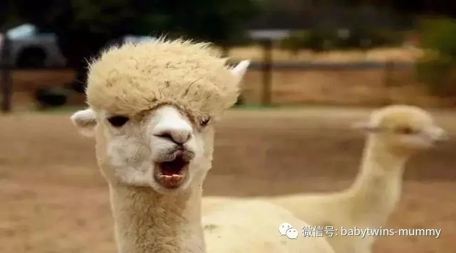
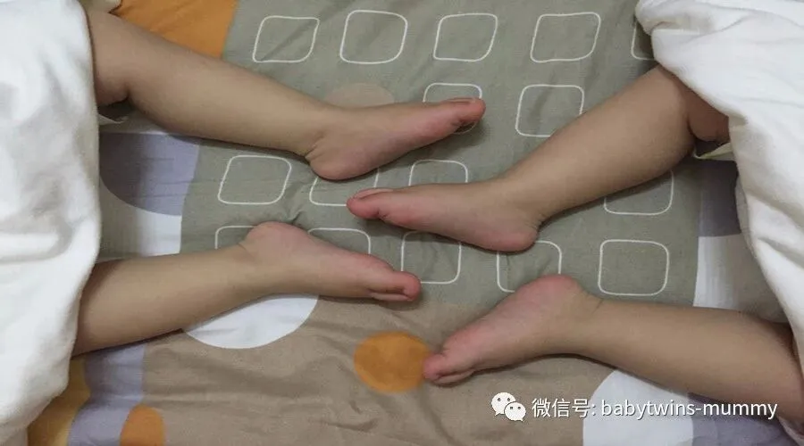
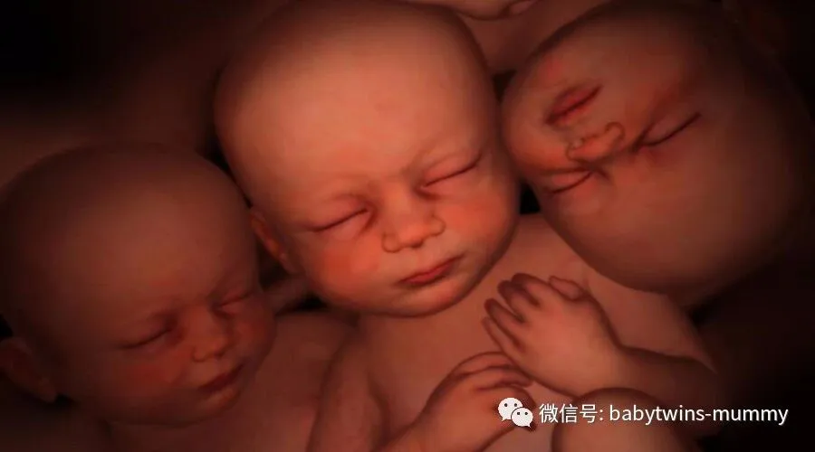
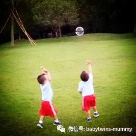

点击上方“孖仔帮”关注我们
"你家的双胞胎是人造的吗"
"...废话，难道是猪生的？"
文|圆圈妈 图片来自网络
01
这是一个事实，经常遇到的事实。
尽管圆圈哥俩快三岁了，这种类似的问题依然存在!
诚然，双胞胎很拉风。
拉风到简直是明星般的待遇，走到哪里被观摩到哪里。
看过大街上那些带着猴子玩杂耍的街边表演吗？
你去围观了吗？
很好奇，很新鲜对不对？
是的。我带着双胞胎哥俩出门就是这种感觉！
只是换个角度，那种感觉...你造吗？
像没有穿衣服的猴子被人看光光了！
相信大多数的双胞胎家长们也是纷纷点头，频频点√！！
推着双人婴儿车，带着双胞胎走在大街上，
总是从余光中瞄到路人追随的目光，
甚至还有特意跑过来问这问那的。
好像双人婴儿车就是一个标志，可以自由询问且我们还必须免费解答。
“嗨，我们是双胞胎，欢迎围观！”
----抱歉，你想多了！。
然而，世界上的闲人真的太多了。
闲人就算了，还好奇心那么重。
哇。双胞胎，男孩还是女孩啊？
------_-||这个很重要吗？。
双胞胎啊，谁是哥谁是弟啊？
-----你们看着猜吧，答对没有奖！。
生出来多重啊？早产的吧！
-----你那么厉害，还问毛线啊！。
诸如这样的问题，我都是“呵呵”然后看心情回答。
只要不是非常隐私的问题，一般都能友好沟通。
遇到比较奇葩的问题，是那次在地铁上。
当时哥俩才半岁，我和圆圈爸人手一只各自抱在怀里。
“双胞胎怎么喂奶啊？两个掏出来一起喂吗？”
是一个满口黄牙但是看着一脸蠢萌蠢萌的奶爸突然问道，
他怀里抱着一个貌似不到2个月的小婴儿。
...“纳尼？"...
...此处省略成千上万只“草泥马”...
"请问你的这【两个】是指哪『两个』？”
“一个大男人问那么细节的问题！请问你，确认带脸出门了吗？”
“这个问题可以换你老婆来问吗？或许我会考虑下传授点喂奶经验。”
最后就是整个地铁车厢，我只听到那蠢萌蠢萌的奶爸被边上的媳妇揪着耳朵，发出惨叫声！
嗷
嗷
嗷
02
双人座的婴儿车，一进电梯，后面的人都甭想进了。
大有“一夫当关万夫莫开”的架势！
它就是一个标志。有范！霸气！
再看看里面那两只小家伙，多么与世无争，漠不关己的样子啊。
盖着柔软的小毛毯，露出四只粉嫩粉嫩的小脚丫。
这是一种唯我独尊的幸福感。
尤其是你带着你的双胞胎硬生生地把后面人都挤电梯外的时候。
看着电梯外的人无奈，跺脚，羡慕，妒忌恨.....
你有点不好意思！但是，SO WHAT!
不要否认了！
你内心是幸灾乐祸的甜蜜蜜。
对吧？
也难怪那么多女人挤破头都想生双胞胎。
甚至仪态尽失地问起“你家双胞胎是人造的吗？”
其实这个问题的正确问法，我懂的。
无非就是想知道双胞胎是自然受孕还是试管还是促排？
问这些问题的人都希望通过更多例子，
试图说服自己，安慰自己，鼓励自己...
“双胞胎而已，造一对就行啦！”
是的，双胞胎真的可以做一对出来。
而且，小菜一碟！
现在医术那么发达，多胞胎简直不在话下。
但是要付出多少代价， 你真的愿意吗？
君不见
张杰和谢娜的跳跳和翘翘
范玮琪和黑人的睿飞和睿翔
林志颖和陈若仪的kyson和Jenson
幸福地活在我们观众人的眼里！背后的代价怕是只有自己心里清楚了！
正所谓： “冷暖自知”
圆圈妈的经验分享:
我带圆圈出门，都是给他们穿一模一样的衣服和鞋子
如果哥哥的裤子尿湿了，我会把弟弟的也一起换掉。
当他们还很小的时候，1岁之前.
用婴儿车推他们出去散步，所到之处都招来路人的目光和搭讪。
刚开始非常喜欢这种被人瞩目的感觉。
那些很细节很私人的问题，我都非常认真的回答了。
“谁带啊？”
“有奶吗？”
“奶够吗？我告诉你.....”
“怎么喂的啊？”
"请保姆吗？"
渐渐的，随着圆圈的长大，也慢慢习惯了这种被人瞩目的待遇.
很多事情都见怪不怪，很多问题都避而不答了。
问的最多的一个问题：自然怀的还是做的？
起初我总是很着急地说出真相，
“我的爸爸的奶奶生过双胞胎，是家族遗传的！”
我生怕别人质疑我家的双胞胎不是纯天然的.
但其实，有谁真正在乎你是“自然怀”还是“人工做”呢？
也许人家反而更希望你回答是"做出来的".
如果有人还问我这个问题，我会这样回答了。
"我生的第一胎是龙凤胎吖"
哈哈，是不是更加打脸啊！
你家的双胞胎是人造的吗？
你会怎么回答，欢迎你留言，写下你的答案哦！
*作者简介：圆圈妈，家有孖仔男两枚，立志做一名合格的80后全职妈妈。
个人博客：三个男人（www.sgguy.com）
一个专注双胞胎群体的网站，面向家长，每天分享亲子养育知识。
本文为圆圈妈原创，图片来自网络，公众号转载可联系授权。
欢迎个人分享给需要的朋友们。
支持原创就在文末点赞，欢迎留言！
敬请关注孖仔帮公众号。
专注双胞胎孩子的成长｜分享育儿资讯
微信ID：babytwins-mummy
长按二维码关注微互动
你家的双胞胎是人造的吗？
你会怎么回答，
欢迎留言，
写下你的答案哦！
点击下方
阅读原文



